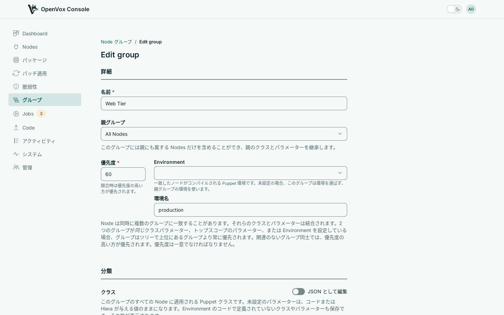

使う
Node を分類する
Facts による一致または名前による固定で構成される Node グループのツリーを使い、各 Node に割り当てるクラス、パラメーター、Environment を決めます。
openvoxserver は各 Node がどうあるべきか、つまりどのクラスをどのパラメーターで含め、コードをどの Environment から取得するかをコンソールに問い合わせます。コンソールは Node グループから答えます。分類が openvoxserver に届くのは接続が完了してからで、その方法はどちらのインストールガイドでも説明しています。
グループの閲覧には classifier:read が、作成・変更・削除には classifier:write が必要です。
グループはツリーを形成する
すべてのグループには親があります。最上位にあるのは All Nodes で、すべての Node が属する組み込みのグループです。削除、名前の変更、移動はできず、ルールも固定された Node もありませんが、クラス、パラメーター、Environment を与えることはでき、それらはフリート全体に適用されます。
グループには、その親にも含まれる Node しか含めることができません。そのため、Linux Servers の配下のグループは、自身のルールがどうであれ Windows の Node を拾うことはなく、グループの Node は常に親の Node の部分集合です。別の親を選ばない限り、新しいグループは All Nodes の直下に置かれます。
グループを自分自身やその配下のグループの下に移動することはできません。また、配下にまだグループがあるグループは削除できません: 先にそれらを移動または削除してください。
ロールが付与されているグループも削除できません。削除すると、そのロールが与えるアクセスを知らないうちに奪ってしまうためです。先にロールページでロールからそのグループを外してください。ユーザー、ロール、トークンを参照してください。
グループが適用する Node をどう決めるか
グループが Node に適用されるのは、Node がグループの親に含まれており、かつ次のいずれかに当てはまる場合です:
- Node が名前でそのグループに固定されている、または
- Node の Facts がグループの一致ルールを満たしている: グループの設定に応じて、条件のすべて、またはいずれか 1 つ。
条件も固定された Node もないグループは、どの Node にも適用されません。空のルールは意図的に「全員」を意味しないようになっているため、作りかけのグループがフリートを乗っ取ることはありません。
固定はグループ自身のルールに優先しますが、親には優先しません。親に含まれていない Node をグループに固定しても、その Node はグループに含まれません。グループのページにはそうした固定が一覧表示されるため、効果のない固定が見過ごされることはありません。
各条件は 1 つの Fact を値と比較します:
| 演算子 | 一致する条件 (Fact が) |
|---|---|
= |
値と等しい |
!= |
値と異なる |
~ |
値に正規表現として一致する |
> < >= <= |
そのとおりに比較します。両辺が数値の場合は数値として比較します |
Facts はパスで名前を指定し、構造化された Facts にはドットを使います: os.family、os.release.major、networking.domain。
グループを作成する
- グループを開き、グループを作成します。
- 名前を付け、親グループを選び、Environment を設定する場合は Environment を選びます。Environment はドロップダウンです。未設定 (その場合にグループが親から何を継承するかが表示されます) は選択を親に委ねます。その下には openvoxserver が報告する Environments が一覧表示されます。その他... を選ぶとテキストフィールドが開き、まだ一覧にない名前 (push したばかりのブランチなど) や、一覧を読み込めなかった場合の名前を入力できます。
- クラスを、それぞれ必要なパラメーターとともに追加し、必要ならトップスコープパラメーターも追加します。後述のクラスを選ぶを参照してください。
- 一致ルールを、1 行に 1 つの条件で組み立てます: Fact パス、演算子、値。Node がすべての条件を満たす必要があるか、いずれか 1 つを満たせばよいかを選びます。エディターは、Fact パスのない条件や、コンパイルできない正規表現を含む条件の保存を拒否し、どの行が誤っているかを示します。
- Facts に関係なく所属させたい Node があれば、certname で固定します。
- 優先度を指定して保存します。


グループ一覧にはツリーが表示され、各グループは親の下に、それぞれが現時点で一致している Node の数とともに表示されるため、何にも一致しないルールや、すべてに一致するルールがすぐにわかります。
JSON として編集はルールを生の JSON として表示します。ルールを貼り付けたり、行エディターにない形を書いたりするためのものです。検査内容は行エディターと同じです: JSON として、または API 経由で保存されたルールに空の Fact パスや壊れた正規表現が含まれていても受け入れられ、単に一致することがないだけです。
クラスを選ぶ
コンソールは deploy したコードが定義するクラスを openvoxserver から読み込むため、グループのクラスは入力するのではなく選択できます。
- クラスの下で、クラスを追加に入力し始め、クラスを選んで追加します。
- パラメーターの 1 つを設定するには、パラメーターを設定でそれを選びます。表示されるフィールドはパラメーターの型に合ったものです: Boolean や Enum には選択肢、Integer や Float には数値、String にはテキスト。注記には型とコード上の既定値が表示されます。それ以外の型は JSON で入力するため、テキストには二重引用符が必要です:
"value"、["a", "b"]。 - コードや Hiera が与える値を維持するには、パラメーターを省略します。その状態に戻すには、パラメーターを削除します。
クラスはグループの Environment から取得されます: グループ自身のもの、なければ Environment を設定している最も近い親のもの、それもなければ production です。ページにはどれが使われているか、一覧がいつ読み込まれたかが表示されます。別の Environment を設定する別のグループにも一致する Node はその Environment に対してコンパイルされますが、グループはそれを知ることができません。
一覧は 5 分間再利用され、コード deploy の後に再び読み込まれます。クラスを更新はすぐに読み込み直し、classifier:write が必要です。
openvoxserver は各 Environment の独自のキャッシュを保持します。コンテナイメージのように Environment を無期限に保持する設定の場合、新しいコードで追加されたクラスは、そのキャッシュが破棄されるまで表示されません。これは、カタログが新しいコードを認識するのに必要な破棄と同じものです。コンテナでインストールするを参照してください。
JSON として編集はクラスを生の JSON として表示します。貼り付けるためのものです。
コードと一致しないクラス
グループでは、Environment が定義していないクラスを指定したり、クラスが宣言していないパラメーターを設定したり、パラメーターの型に合わない値を与えたりできてしまいます。これは、コード内でクラスの名前が変更または削除された場合や、コードが deploy される前にグループが保存された場合に起こります。
グループのページではそれぞれに印が付き、グループ一覧ではそのグループにクラスの不一致と表示されます。これらは助言にすぎません:
- グループはそのまま保存されます。何も削除・変更されません。
- Node は引き続きそのクラスで分類されます。存在しないクラスをカタログが必要とする Node は、コードかグループが変更されるまで
Could not find classでコンパイルに失敗します。 - 検査されるのは、コンソールが検査できる型だけです。それ以外の型の値に印が付くことはありません。
Environment の manifests のいずれかが構文解析に失敗した場合、クラスがその manifest にある可能性があるため、何も欠落としてマークされません。代わりに、ページには manifests とそのエラーが一覧表示されます。
一覧を利用できない場合
ページにその理由が表示され、クラスとパラメーターは名前で入力します。何にも印は付かず、保存と分類は通常どおり機能します。原因は次のとおりです:
- コンソールが openvoxserver に接続されていません。
CONSOLE_PUPPET_SERVER_URLを設定してください。 - openvoxserver がコンソールによるクラスの読み取りを許可していません。インストールガイド (コンテナまたはパッケージ) にあるルールを追加してください。
- openvoxserver に到達できませんでした。以前に一覧を読み込んでいた場合は、その一覧が古い可能性がある旨の印付きで提示されます。
グループが重なる場合
複数のグループに一致する Node は、そのすべてからすべてを受け取ります: すべてのクラス、すべてのパラメーター。グループ内の Node はその上位のすべてのグループにも含まれるため、グループは上位のグループが設定し、自身が設定していないものを継承します。
2 つのグループが同じものを異なる値に設定している場合 (同じクラスパラメーター、同じトップスコープパラメーター、または Environment)、次の 2 つの規則がこの順序で決定します:
- グループは常にその上位のグループに優先します。子の値は、優先度に関係なく、親や祖父母などの値に勝ちます。
- どちらも他方の上位にないグループ同士では、優先度の高い方が勝ちます。
グループは少なくとも親と同じ順位を持つものとしても扱われます。優先度 10 の親、優先度 1 のその子、優先度 5 の無関係なグループがあり、いずれも 1 台の Node に一致するとします。子は第 1 の規則によって親に勝ち、さらに順位 10 として扱われるため、無関係なグループにも勝ちます: グループを絞り込んだものは、そのグループが上回るものすべてを上回ります。
子がより高い優先度を上書きする場合
グループが、より高い優先度を持つ上位のグループと異なる設定をしている場合も、使われるのは子の値ですが、優先度だけで判断すれば逆の結果になっていたはずです。コンソールはそれを知らせます: グループのページでは開いたときや保存したときに親と該当する値が示され、グループ一覧ではそのグループに優先度を上書きの印が付き、変更はアクティビティページに記録されます。これは警告であり、エラーではありません。何も拒否されず、Node は通常どおり分類されます。解消するには、子に高い優先度を与えるか、2 つのグループのどちらかからその値を削除します。
All Nodes に設定された値によってこれが発生することはありません: どのグループもそれらを上書きすることが想定されているためです。
設定データを設定する
設定データは、コードが lookup() で読み込むデータです: ntp::servers、profile::dns::resolvers、その他の Hiera キーの値です。Node グループに設定すると、コミットやコード deploy なしで、グループ内のすべての Node の値が変わります。
- グループを開き、クラスの下にある設定データ(JSON)を開きます。
- キーと値の JSON オブジェクトを入力します。例:
{"ntp::servers": ["0.pool.ntp.org"], "dns::timeout": 5}。値には任意の JSON (文字列、数値、真偽値、リスト、オブジェクト、null) を使えます。 - グループを保存します。Node は次の Puppet run でそれを反映します。
キーは英字、数字、_ : . - からなる最大 255 文字です。1 つのグループは最大 1000 個のキーを持て、各値は最大 64 KiB です。キー lookup_options は拒否されます: これは Hiera がマージの挙動を設定するためのもので、設定データではその機能を提供していません。
Node が受け取る値
データは、クラスパラメーターを結合するのと同じ 2 つの規則で、Node が属するすべてのグループから結合されます (グループが重なる場合を参照): グループはその上位のグループに勝ち、無関係なグループ同士では優先度の高い方が勝ちます。勝ったグループが設定したキーは、他のグループの同じキーを丸ごと置き換えます: 2 つのグループがどちらも app::opts をオブジェクトとして設定していても、それらのオブジェクトがキー単位でマージされることはありません。
コンソールのデータは control リポジトリに優先する
キーがここと control リポジトリの Hiera データの両方で設定されている場合は、コンソールの値が使われます。コンソールが設定していないキーは、これまでどおり control リポジトリから検索されます。そのため、設定データはグループごとに上書きしたい値を置く場所であり、それ以外のすべては引き続き control リポジトリに置きます。
シークレット向けではない
設定データはプレーンテキストとして保存され、Node グループを閲覧できる全員 (classifier:read) に表示されます。パスワードや鍵を入れないでください。アクティビティページと監査ログには、どのキーが変更されたかが記録されますが、その値は決して記録されません。
Node の実行が失敗する場合
openvoxserver は、カタログをコンパイルするたびに Node のデータをコンソールに問い合わせます。コンソールが応答できない場合、欠けた値からカタログを組み立てるのではなく、コンソールを示すエラーでコンパイルが失敗します。サーバーが問い合わせるよう設定する方法は、インストールガイドで説明しています。
Node に何が割り当てられるかを確認する
グループのページには、現時点で一致している Node が一覧表示されます。Node が最終的に受け取るのは一致するすべてのグループを統合したもので、その答え全体を示す唯一の場所が enc-bridge 自身です: インストールガイドにあるように openvoxserver のホスト上で問い合わせると、openvoxserver に伝えられる内容がそのまま表示されます。Node の設定データは別で、同じトークンを使った GET /api/v1/enc/<certname>/data で取得できます。
分類は Node の次の Puppet run で反映されます。すぐに適用するには、グループのページから実行を開始してください。グループが一致するすべての Node で Puppet が実行されます。Jobs を実行するを参照してください。
グループへのすべての変更は、変更したユーザーとともにアクティビティページに記録されます。
ツリーのないバージョンからのアップグレード
アップグレードによって Node の分類が変わることはありません。既存のグループはすべて All Nodes の直接の子になり、ルール、固定、優先度を保持し、これまでどおりすべての条件で一致します。
すでに「All Nodes」という名前のグループがあった場合、それは All Nodes (previous) に名前が変更され、独自のルールとともにそれまでとまったく同じように動作し続けます。組み込みのグループには変換されません。変換すると、そのルールが一致しなかった Node にもそのクラスが適用されてしまうためです。確認が済んだら、そのクラスを組み込みの All Nodes に移して削除できます。
複数のコンソールインスタンスを動かしている場合は、あるグループを別のグループの下に置く前に、すべてのインスタンスのアップグレードを完了してください。古いバージョンのままのインスタンスは親を無視し、優先度だけで分類してしまいます。インスタンスを増やすを参照してください。